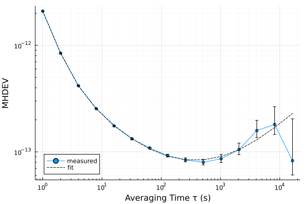
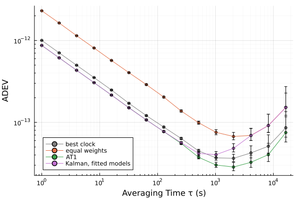

From one clock to a time scale
A stability curve describes the noise of a clock. The same noise, written as a state model, lets a Kalman filter follow the clock, predict it once its reference is lost, and weigh it against other clocks. This tutorial takes one simulated clock from its record to a noise fit, a ClockModel, a filter and a holdover test, and then forms a time scale from four clocks. The data are simulated, so that each estimate can be set beside the truth.
using SigmaTau
using RandomA day of one clock
The clock has white FM of $10^{-12}$ at 1 s, a flicker floor of $10^{-13}$ and random-walk FM that takes over near 1000 s, and it is read every second against a reference with 1 ps of white PM. simulate_clock draws the record and also returns the states behind it, the true phase of the clock among them:
τ₀ = 1.0
N = 86_400
truth = ClockModel(; tau0 = τ₀, R = 1e-24, q1 = 1e-24, q2 = 3e-29,
flicker_fm = 1e-26 / 2log(2), tau_max = N)
p, x = simulate_clock(truth, N; rng = Xoshiro(1))powerlaw_fit fits the levels $h_α$ of the five power-law noise types to the modified Hadamard deviation of the record:
fit = powerlaw_fit(p)PowerLawFit to mhdev (15 points)
h2 WHPM 7.714e-23
h1 FLPM 1.444e-24
h0 WHFM 1.81e-24
h-1 FLFM 7.443e-27
h-2 RWFM 1.33e-30using Plots
r = mhdev(p)
plot(r; label = "measured")
plot!(r.tau, powerlaw_sigma(fit, r.tau; deviation = :mhdev); label = "fit",
ls = :dash, color = :black, legend = :bottomleft)
From the fit to a state model
clock_model turns the levels into the noise of a state model: white PM becomes the variance R of a reading, and white and random-walk FM become the levels q1 and q2 that drive the phase and the frequency (Noise levels). Flicker noise has no finite state. The flicker FM is kept as a few Markov processes that add to the frequency (Flicker states); flicker = false leaves it out.
model = clock_model(fit)5-state ClockModel, τ₀ = 1.0 s
R 9.77e-25 s²
q1 9.048e-25 s
q2 2.625e-29 1/s
flicker FM 7.443e-27, 3 Markov states, 42.17 to 4217 s
flicker PM 1.444e-24, no statesThe fit also finds a little flicker PM, which this clock does not have. It never holds a quarter of the Allan variance, so the model gives it no states. The columns are the levels of the fitted model and those that the record was made with:
[model.R truth.R
model.q1 truth.q1
model.flicker_fm truth.flicker_fm
model.q2 truth.q2]4×2 Matrix{Float64}:
9.76992e-25 1.0e-24
9.04816e-25 1.0e-24
7.44319e-27 7.21348e-27
2.62505e-29 3.0e-29The four levels are within 13 % of the truth.
The filter
kalman_filter estimates the phase and the frequency of the clock at every sample:
kf = kalman_filter(p, model)A reading is the phase of the clock plus the noise of the measurement. The simulation kept the phase itself, so the error of the readings and that of the estimate can both be measured. The columns are the RMS error of the readings, that of the estimate, and the standard deviation that the filter gives its estimate, in seconds:
rms(v) = sqrt(sum(abs2, v) / length(v))
k = 1001:N
[rms(p.x[k] .- x[k, 1]) rms(kf.x[k, 1] .- x[k, 1]) sqrt(kf.P[1, 1, end])]1×3 Matrix{Float64}:
1.00167e-12 7.93532e-13 7.93909e-13The estimate is closer to the clock than the readings are, and its error is the one that the filter states.
Holdover
A measured clock has no truth to compare with, and the record itself has to test the model. holdover does it where it matters: from every sample past the first quarter of the record it carries the estimate ahead with no further readings and compares with the reading there (Holdover). With limit it also answers how long the clock keeps time to 1 ns once its reference is lost:
tau = [10, 100, 1000, 10_000]
h = holdover(p, model; tau, limit = 1e-9)HoldoverResult(4 pts, τ∈[10, 1e+04] s, trained on 2.16e+04 s)
1e-09 s reached after 2287 s
tau rms p95 worst n claimed
10 3.765e-12 7.381e-12 1.749e-11 64791 3.624e-12
100 1.81e-11 3.596e-11 8.256e-11 64701 1.758e-11
1000 1.773e-10 3.56e-10 5.791e-10 63801 1.783e-10
1e+04 3.458e-09 6.309e-09 8.737e-09 54801 3.405e-09rms is the error made and claimed the standard deviation that the filter itself gives it. The columns are the holdover time and the ratio of rms to claimed, for this model and for the one that leaves the flicker FM out:
h0 = holdover(p, clock_model(fit; flicker = false); tau)
[tau h.rms ./ h.claimed h0.rms ./ h0.claimed]4×3 Matrix{Float64}:
10.0 1.03895 1.13848
100.0 1.02934 1.49629
1000.0 0.994646 1.481
10000.0 1.01571 1.19366With the states the errors are those claimed, within 4 %. Without them the errors are nearly the same, and up to 1.5 times what the filter claims.
innovation_check tests the one-step predictions of the filter instead. It is the stricter test: on a record of this length it fails both models, the first for innovations 3 % larger in variance than the model expects (Testing the model).
Four clocks
Four clocks now, each twice as noisy as the one before it, with white FM and random-walk FM. simulate_ensemble reads them against one reference. With reference = 0 the reference is perfect, so that the stability of each clock and of the scale shows directly:
clocks = [ClockModel(; tau0 = τ₀, q1 = 1e-24 * 4.0^i, q2 = 1e-30 * 4.0^i)
for i in 0:3]
cc, _ = simulate_ensemble(clocks, N; reference = 0, rng = Xoshiro(2))
ccClockComparisons: 4 clocks × 86400 samples at τ₀ = 1.0 s, against ideal reference
clock 1, clock 2, clock 3, clock 4A time scale is a weighted mean of its clocks. Equal weights (:ewfa) let the noisiest clock set the level. AT1 learns the prediction error of each clock from the record and weighs by its inverse (Weiss and Weissert (1991), Eqs. (1)–(10)):
ewfa = timescale(cc; algorithm = :ewfa)
at1 = timescale(cc; algorithm = :at1)AT1 timescale from 4 clocks, 86400 samples
final weights 0.701, 0.227, 0.057, 0.015The Kalman scale :greenhall takes its weights from the clock models (Greenhall (2003), §4.2). A measured ensemble has to fit them, which clock_models does from the comparisons. The values are the fitted random-walk FM levels over the true ones:
fitted = clock_models(cc)
round.([c.q2 for c in fitted] ./ [c.q2 for c in clocks]; sigdigits = 2)4-element Vector{Float64}:
3.1
0.025
1.1
0.52kalman = timescale(cc; algorithm = :greenhall, models = fitted)timescale_phase returns the reference against the scale, which against a perfect reference is the error of the scale. The columns are $τ$ and the Allan deviation of the best clock, of the equal-weight scale, of AT1 and of the Kalman scale:
m = [1, 10, 100, 1000, 10_000]
σ(scale) = adev(timescale_phase(scale), m; ci = false).dev
[m adev(cc[1], m; ci = false).dev σ(ewfa) σ(at1) σ(kalman)]5×5 Matrix{Float64}:
1.0 1.00147e-12 2.30419e-12 8.69519e-13 8.70844e-13
10.0 3.15412e-13 7.24486e-13 2.73119e-13 2.73149e-13
100.0 9.71216e-14 2.30619e-13 8.53499e-14 8.5279e-14
1000.0 3.69715e-14 7.61362e-14 3.03515e-14 4.0328e-14
10000.0 5.57429e-14 1.05854e-13 4.7706e-14 1.02805e-13AT1 is more stable than its best clock at every $τ$ here. The Kalman scale equals it up to 100 s and falls behind the best clock from 1000 s on. A day shows too little of the random-walk FM of these clocks to fit its level, as the ratios above say, and the scale is as good as its models (Fitted models).
m = 2 .^ (0:14)
plot(adev(cc[1], m); label = "best clock", color = :gray)
plot!(adev(timescale_phase(ewfa), m); label = "equal weights")
plot!(adev(timescale_phase(at1), m); label = "AT1")
plot!(adev(timescale_phase(kalman), m); label = "Kalman, fitted models",
legend = :bottomleft)
In a laboratory the reference is one of the clocks or a standard, and timescale_phase is then that reference against the scale.
Where next
| For | See |
|---|---|
| the states and noise levels of the model | The clock model |
| the filter, the smoother and tuning | Kalman filter |
| holdover with a least-squares fit, and predicted from a noise model | Holdover |
| the six time scales compared, steps and missing readings | Clock ensembles |
| a clock kept on its reference | Steering |
sigmatau holdover --kalman and sigmatau timescale run the same tests from the command line, and the explorer has them on its Holdover and Ensemble pages.